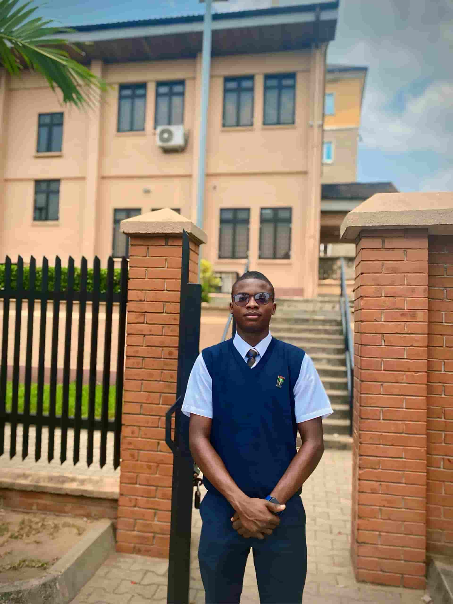

Nmesoma Nwaeze | WDD 130
Hello! My name is Nmesoma Nwaeze and I am from Aba,Abia State,Nigeria. I find it a delight to tell people about my heritage. I am Igbo and the Igbo people are one of the wealthiest Black Race on Earth boasting of many millionaires than in any black nation around the world. I hope you will eventually come to visit the South-South and South-East regions of Nigeria to experience first hand what I mean by what I said. I'm ever ready to be your non-paid guide. Catch you soon. Before I forget, I will introduce myself as a student of Software Development of Brigham Young University-Idaho and I'm elated about how amazing the knowledge I gain. I'm looking forward to creating my own website and at last live my dreamlife of being a Software Developer.